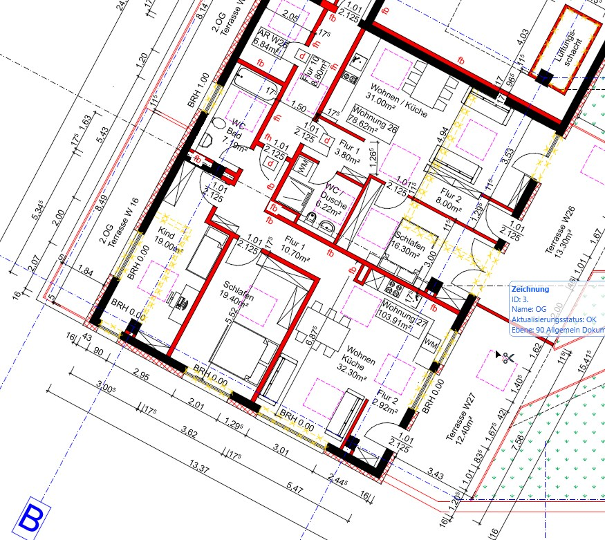

Abgeschlossenheitsbescheinigungen
In enger Abstimmung mit unserem Kooperationspartner, einem erfahrenen Notar, begleite ich Sie durch den gesamten Prozess – von der Erstellung der Bescheinigung bis zur Eintragung, falls gewünscht, auch in direkter Zusammenarbeit mit dem ausgewählten Notar.

Nutzungsänderungen
Ob die Umwandlung von Gewerbeflächen in Wohnungen oder die Planung und Genehmigung von Nutzungsänderungen in ein Restaurant – ich kümmere mich um alle notwendigen Schritte, um Ihre Vision Wirklichkeit werden zu lassen.

Denkmalschutz Umbauten oder Erweiterungen
Der Umbau von denkmalgeschützten Objekten erfordert eine enge Zusammenarbeit mit der Denkmalschutzbehörde. Mit meiner Erfahrung und sorgfältigen Vorbereitung sorge ich dafür, dass Ihr Vorhaben erfolgreich genehmigt und umgesetzt wird.
Anbauten und Erweiterungen
Von kleinen Anbauten bis hin zu großen Erweiterungsprojekten: Ich stehe Ihnen mit Rat und Tat zur Seite, um Ihre Wünsche zu realisieren – egal, ob es sich um einen privaten oder gewerblichen Bau handelt.
Ihr Projekt – professionell betreut
Ob komplexe Bauvorhaben oder kleine bauliche Veränderungen, ich begleite Sie mit Fachwissen, Erfahrung und persönlichem Engagement von der ersten Idee bis zur erfolgreichen Fertigstellung.
Jetzt anfragen